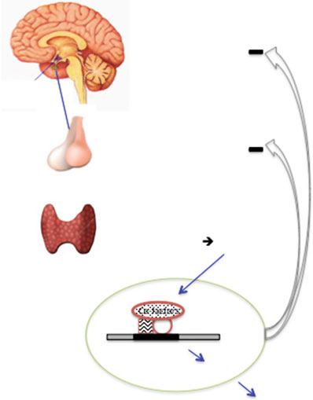
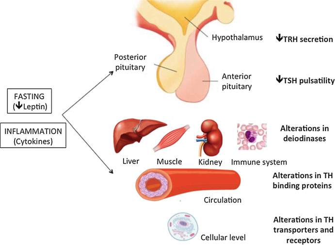
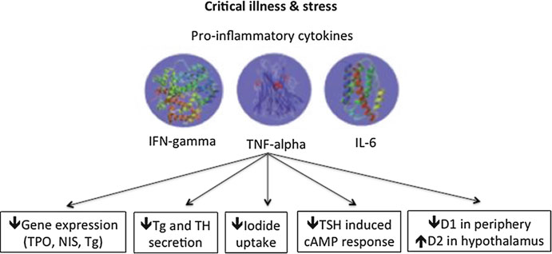
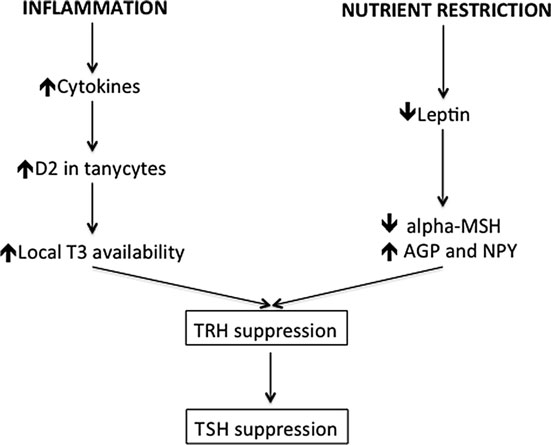

<!DOCTYPE html>
<html lang="en">
<head>
<meta charset="UTF-8">
<meta name="viewport" content="width=device-width, initial-scale=1.0">
<title>Surgical Insight Hub — Non-thyroidal Illness Monograph</title>
<link href="https://fonts.googleapis.com/css2?family=Playfair+Display:wght@400;600;700&family=Source+Serif+4:ital,opsz,wght@0,8..60,300;0,8..60,400;0,8..60,600;1,8..60,300;1,8..60,400&family=JetBrains+Mono:wght@400;500&display=swap" rel="stylesheet">
<link rel="stylesheet" href="../../css/theme.css?v=4.0.0">
<link rel="stylesheet" href="../../css/shared.css">
<script>
  const savedTheme = localStorage.getItem('sih-theme') || 'light';
  if (savedTheme === 'dark') document.documentElement.setAttribute('data-theme', 'dark');
</script>
<style>
:root {
  --primary:   #4C1D95; 
  --primary-dk:#2E1065;
  --primary-lt:#F5F3FF;
  --accent:    #7C3AED;
  --accent2:   #E11D48;
  --gold:      #D97706;
  --gold-lt:   #FEF3C7;
  --red:       #E11D48;
  --red-lt:    #FFF1F2;
  --bg:        #FAFAFA;
  --bg2:       #F4F4F5;
  --border:    #E5E7EB;
  --text:      #0F172A;
  --muted:     #64748B;
  --white:     #FFFFFF;
  --sidebar-w: 320px;
}
[data-theme="dark"] {
  --bg: #0A0702;
  --bg2: #140E05;
  --text: #F3F4F6;
  --muted: #A3A3A3;
  --border: rgba(255,255,255,0.08);
  --primary-lt: #2E1065;
  --white: #140E05;
}
*,*::before,*::after{box-sizing:border-box;margin:0;padding:0;}
html{scroll-behavior:smooth;}
body{font-family:'Source Serif 4',Georgia,serif;background:var(--bg);color:var(--text);font-size:16px;line-height:1.75;}

#sidebar {
  position: fixed; top: 0; left: 0; width: var(--sidebar-w); height: 100vh;
  background: var(--primary-dk); color: #F5F3FF;
  display: flex; flex-direction: column;
  z-index: 1000; overflow: hidden;
  transform: translateX(-100%);
  transition: transform 0.3s cubic-bezier(0.4, 0, 0.2, 1);
  box-shadow: 4px 0 24px rgba(0,0,0,0.4);
}
body.sidebar-open #sidebar { transform: translateX(0); }

#sidebar-overlay {
  position: fixed; top: 0; left: 0; width: 100vw; height: 100vh;
  background: rgba(46, 16, 101, 0.7); backdrop-filter: blur(3px);
  z-index: 950; opacity: 0; pointer-events: none; transition: opacity 0.3s ease;
}
body.sidebar-open #sidebar-overlay { opacity: 1; pointer-events: auto; }

#sidebar-toggle {
  position: fixed; top: 72px; left: 24px; z-index: 900;
  background: var(--primary); color: white;
  border: none; border-radius: 30px;
  padding: 10px 18px; font-family: 'JetBrains Mono', monospace; font-size: 13px; font-weight: 600;
  letter-spacing: 0.05em; cursor: pointer; box-shadow: 0 4px 12px rgba(0,0,0,0.25);
  display: flex; align-items: center; gap: 8px; transition: all 0.2s;
}
#sidebar-toggle:hover { background: var(--accent2); transform: translateY(-2px); }

#sidebar-header{padding:20px 20px 14px;border-bottom:1px solid rgba(255,255,255,0.08);flex-shrink:0;}
#sidebar-header .logo{font-family:'Playfair Display',serif;font-size:13px;font-weight:700;color:var(--accent2);letter-spacing:0.08em;text-transform:uppercase;margin-bottom:4px;}
#sidebar-header .sub{font-size:10.5px;color:rgba(245,243,255,0.6);letter-spacing:0.04em;}
#sidebar-search{padding:10px 14px;border-bottom:1px solid rgba(255,255,255,0.05);flex-shrink:0;}
#sidebar-search input{width:100%;background:rgba(255,255,255,0.05);border:1px solid rgba(255,255,255,0.1);border-radius:6px;color:#F5F3FF;padding:6px 10px;font-size:12px;font-family:'Source Serif 4',serif;outline:none;transition:border-color 0.2s;}
#sidebar-search input::placeholder{color:rgba(245,243,255,0.4);}
#sidebar-search input:focus{border-color:var(--accent2);}
#sidebar-nav{flex:1;overflow-y:auto;padding:8px 0 20px;}
#sidebar-nav::-webkit-scrollbar{width:4px;}
#sidebar-nav::-webkit-scrollbar-thumb{background:rgba(255,255,255,0.15);border-radius:2px;}
.vol-label{font-size:9.5px;font-weight:600;letter-spacing:0.12em;text-transform:uppercase;color:var(--accent2);padding:14px 18px 4px;}
.nav-item{display:block;padding:8px 18px 8px 22px;font-size:12.5px;color:rgba(245,243,255,0.8);text-decoration:none;border-left:2px solid transparent;transition:all 0.15s;line-height:1.4;}
.nav-item:hover{color:#fff;background:rgba(255,255,255,0.03);border-left-color:rgba(225,29,72,0.5);}
.nav-item.active{color:#fff;background:rgba(255,255,255,0.06);border-left-color:var(--accent2);font-weight:600;}
.nav-item .num{font-family:'JetBrains Mono',monospace;font-size:10px;color:rgba(245,243,255,0.4);margin-right:6px;}

#main{margin-left:0; min-height:100vh;}
#hero{background:linear-gradient(135deg,var(--primary-dk) 0%,#4C1D95 60%,#2E1065 100%);color:white;padding:120px 72px 60px;position:relative;overflow:hidden;}
#hero::before{content:'';position:absolute;top:-60px;right:-60px;width:380px;height:380px;background:radial-gradient(circle,rgba(225,29,72,0.15) 0%,transparent 70%);pointer-events:none;}
#hero::after{content:'';position:absolute;bottom:0;left:0;right:0;height:3px;background:linear-gradient(90deg,var(--accent2),var(--gold),transparent);}
#hero .eyebrow{font-family:'JetBrains Mono',monospace;font-size:11px;letter-spacing:0.16em;color:var(--accent2);text-transform:uppercase;margin-bottom:14px;}
#hero h1{font-family:'Playfair Display',serif;font-size:42px;font-weight:700;line-height:1.15;margin-bottom:10px;color:#fff;}
#hero .subtitle{font-size:18px;color:rgba(255,255,255,0.8);font-style:italic;margin-bottom:28px;}
#hero .badges{display:flex;gap:10px;flex-wrap:wrap;}
#hero .badge{background:rgba(255,255,255,0.1);border:1px solid rgba(255,255,255,0.2);border-radius:20px;padding:4px 14px;font-size:12px;color:rgba(255,255,255,0.95);font-family:'JetBrains Mono',monospace;}

.content-wrap{max-width:900px;margin:0 auto;padding:40px 48px 80px;}

.callout{margin:18px 0;padding:14px 18px;border-radius:0 8px 8px 0;border-left:4px solid;font-size:14px;line-height:1.65;}
.callout .label{font-family:'JetBrains Mono',monospace;font-size:10px;font-weight:600;letter-spacing:0.12em;text-transform:uppercase;display:block;margin-bottom:4px;}
.callout.pearl{background:var(--gold-lt);border-color:var(--gold);color:var(--text);}
.callout.pearl .label{color:var(--gold);}
.callout.warn{background:var(--red-lt);border-color:var(--red);color:var(--text);}
.callout.warn .label{color:var(--red);}

@media(max-width:900px) {
  .content-wrap { padding: 20px 20px 60px; }
  #hero { padding: 80px 20px 40px; }
  #hero h1 { font-size: 30px; }
  #sidebar-toggle { top: 64px; left: 16px; }
}
</style>
<link rel="icon" type="image/png" href="../../assets/images/Surgical_Insight_Hub_Logo.png">
</head>
<body>

<nav class="nav" id="mainNav">
  <div class="nav-left">
    <a href="../../index.html" class="nav-pill">
      <div class="nav-logo-img">
        
      </div>
      <div>
        <div class="nav-brand-text">Surgical Insight Hub</div>
        <div class="nav-brand-sub">The Residency Journal</div>
      </div>
    </a>
  </div>
  <div class="nav-links-pill">
    <a href="../../index.html">Home</a>
    <a href="../../notes.html" class="active">Notes</a>
    <a href="../operative_approach.html">Playbook</a>
    <a href="../../arena.html?v=4.0.0">MCQ Arena</a>
    <a href="../../podcast.html">Podcast</a>
    <a href="../../surgery-talk.html">Surgery Talk</a>
    <a href="../../about.html">About</a>
  </div>
  <div class="nav-right">
    <button class="theme-toggle" id="themeToggle" aria-label="Toggle Theme">
      <svg id="moonIcon" viewBox="0 0 24 24" width="18" height="18"><path d="M21 12.79A9 9 0 1 1 11.21 3 7 7 0 0 0 21 12.79z"></path></svg>
      <svg id="sunIcon" style="display:none;" viewBox="0 0 24 24" width="18" height="18"><circle cx="12" cy="12" r="5"></circle><line x1="12" y1="1" x2="12" y2="3"></line><line x1="12" y1="21" x2="12" y2="23"></line><line x1="4.22" y1="4.22" x2="5.64" y2="5.64"></line><line x1="18.36" y1="18.36" x2="19.78" y2="19.78"></line><line x1="1" y1="12" x2="3" y2="12"></line><line x1="21" y1="12" x2="23" y2="12"></line><line x1="4.22" y1="19.78" x2="5.64" y2="18.36"></line><line x1="18.36" y1="5.64" x2="19.78" y2="4.22"></line></svg>
    </button>
    <a href="https://t.me/sugicalInsightHub" target="_blank" class="nav-tg-btn" title="Join Telegram">
      <svg width="18" height="18" viewBox="0 0 24 24" fill="#f0d080"><path d="M12 0C5.37 0 0 5.37 0 12s5.37 12 12 12 12-5.37 12-12S18.63 0 12 0zm5.89 8.22l-1.97 9.28c-.15.66-.54.82-1.08.51l-3-2.21-1.45 1.39c-.16.16-.3.3-.61.3l.21-3.05 5.56-5.02c.24-.21-.05-.33-.37-.12l-6.87 4.33-2.96-.92c-.64-.2-.66-.64.14-.95l11.57-4.46c.54-.19 1.01.13.83.94z"/></svg>
    </a>
    <a href="../../arena.html?v=4.0.0" class="nav-btn arena-btn">MCQ Arena</a>
  </div>
</nav>

<div class="mob-nav-overlay" id="mobNavOverlay" onclick="closeMobNav()"></div>
<div class="mob-nav-sheet" id="mobNavSheet">
  <div class="mob-nav-handle"></div>
  <a href="../../index.html" onclick="closeMobNav()">Home</a>
  <a href="../../notes.html" onclick="closeMobNav()">Notes</a>
  <a href="../operative_approach.html" onclick="closeMobNav()">Playbook</a>
  <a href="../../podcast.html" onclick="closeMobNav()">Podcast</a>
  <a href="../../surgery-talk.html" onclick="closeMobNav()">Surgery Talk</a>
  <a href="../../arena.html" onclick="closeMobNav()">MCQ Arena</a>
  <a href="../../about.html" onclick="closeMobNav()">About</a>
  <a href="https://t.me/sugicalInsightHub" target="_blank" rel="noopener" onclick="closeMobNav()" style="color: var(--brand-gold); font-weight: 800;">Join Telegram Community</a>
</div>

<button id="sidebar-toggle" onclick="toggleSidebar()">
  <span>📜</span> Chapter Navigation
</button>
<div id="sidebar-overlay" onclick="closeSidebar()"></div>

<aside id="sidebar">
  <div id="sidebar-header">
    <div class="logo">Surgical Insight Hub</div>
    <div class="sub">Thyroid Dx Textbook Series</div>
  </div>
  <div id="sidebar-search">
    <input type="text" placeholder="Search chapters..." oninput="filterNav(this.value)">
  </div>
  <nav id="sidebar-nav">
    <div class="vol-label">All 25 Endocrine Chapters</div>
    <a class="nav-item" href="endocrine_ch01_regulation_of_thyroid_function.html"><span class="num">Ch 1</span>Regulation of Thyroid Function, Synthesis, and Function of Thyroid Hormones</a>
<a class="nav-item" href="endocrine_ch02_tests_of_thyroid_function.html"><span class="num">Ch 2</span>Tests of Thyroid Function</a>
<a class="nav-item" href="endocrine_ch03_thyroid_autoantibodies.html"><span class="num">Ch 3</span>Thyroid Autoantibodies</a>
<a class="nav-item" href="endocrine_ch04_nonisotopic_thyroid_imaging.html"><span class="num">Ch 4</span>Nonisotopic Thyroid Imaging</a>
<a class="nav-item" href="endocrine_ch05_nontoxic_goiter.html"><span class="num">Ch 5</span>Nontoxic Goiter</a>
<a class="nav-item" href="endocrine_ch06_thyroid_nodule.html"><span class="num">Ch 6</span>Thyroid Nodule</a>
<a class="nav-item" href="endocrine_ch07_hashimoto_s_thyroiditis.html"><span class="num">Ch 7</span>Hashimoto´s Thyroiditis</a>
<a class="nav-item" href="endocrine_ch08_postpartum_thyroiditis_and_sil.html"><span class="num">Ch 8</span>Postpartum Thyroiditis and Silent Thyroiditis</a>
<a class="nav-item" href="endocrine_ch09_acute_and_subacute_thyroiditis.html"><span class="num">Ch 9</span>Acute and Subacute Thyroiditis</a>
<a class="nav-item" href="endocrine_ch10_classification_and_etiopathoge.html"><span class="num">Ch 10</span>Classification and Etiopathogenesis of Hypothyroidism</a>
<a class="nav-item" href="endocrine_ch11_congenital_hypothyroidism.html"><span class="num">Ch 11</span>Congenital Hypothyroidism</a>
<a class="nav-item" href="endocrine_ch12_central_hypothyroidism.html"><span class="num">Ch 12</span>Central Hypothyroidism</a>
<a class="nav-item" href="endocrine_ch13_diagnosis_and_treatment_of_hyp.html"><span class="num">Ch 13</span>Diagnosis and Treatment of Hypothyroidism</a>
<a class="nav-item" href="endocrine_ch14_graves_disease.html"><span class="num">Ch 14</span>Graves´ Disease</a>
<a class="nav-item" href="endocrine_ch15_graves_ophthalmopathy.html"><span class="num">Ch 15</span>Graves´ Ophthalmopathy</a>
<a class="nav-item" href="endocrine_ch16_treatment_of_graves_disease.html"><span class="num">Ch 16</span>Treatment of Graves´ Disease</a>
<a class="nav-item" href="endocrine_ch17_toxic_adenoma_and_multinodular.html"><span class="num">Ch 17</span>Toxic Adenoma and Multinodular Toxic Goiter</a>
<a class="nav-item" href="endocrine_ch18_pathogenesis_of_thyroid_carcin.html"><span class="num">Ch 18</span>Pathogenesis of Thyroid Carcinoma</a>
<a class="nav-item" href="endocrine_ch19_differentiated_thyroid_carcino.html"><span class="num">Ch 19</span>Differentiated Thyroid Carcinoma of Follicular Origin</a>
<a class="nav-item" href="endocrine_ch20_medullary_carcinoma.html"><span class="num">Ch 20</span>Medullary Carcinoma</a>
<a class="nav-item" href="endocrine_ch21_anaplastic_and_other_forms_of_.html"><span class="num">Ch 21</span>Anaplastic and Other Forms of Thyroid Carcinoma</a>
<a class="nav-item" href="endocrine_ch22_new_medical_treatment_for_thyr.html"><span class="num">Ch 22</span>New (Medical) Treatment for Thyroid Carcinoma</a>
<a class="nav-item" href="endocrine_ch23_thyroid_physiology_and_thyroid.html"><span class="num">Ch 23</span>Thyroid Physiology and Thyroid Diseases in Pregnancy</a>
<a class="nav-item active" href="endocrine_ch24_non_thyroidal_illness.html"><span class="num">Ch 24</span>Non-thyroidal Illness</a>
<a class="nav-item" href="endocrine_ch25_drugs_and_other_substances_int.html"><span class="num">Ch 25</span>Drugs and Other Substances Interfering with Thyroid Function</a>

  </nav>
</aside>

<main id="main">
<header id="hero">
  <div class="eyebrow">Endocrine Surgery · Chapter 24</div>
  <h1>Non-thyroidal Illness</h1>
  <p class="subtitle">Structured Surgical Monograph formatted with fluid prose, inline textbook diagnostic plates, and clinical guidance.</p>
  <div class="badges">
    <span class="badge">Chapter 24</span>
    <span class="badge">Inline Plates</span>
    <span class="badge">Thyroid Dx PDF</span>
  </div>
</header>

<div class="content-wrap">
  <section class="topic">
    
    <div class="callout pearl" style="margin-bottom:28px;">
      <span class="label">🎓 TEXTBOOK MONOGRAPH — THYROID DX</span>
      Full surgical monograph extracted directly from <strong>Thyroid Pathology and Laboratory Diagnostics</strong> (Chapter 24: Non-thyroidal Illness). Features complete text, formatted clinical guidance, and inline textbook figures.
    </div>
<ul style="margin:12px 0 20px 20px;">
<li style="margin-bottom:8px; line-height:1.65;"><strong>Non-thyroidal Illness Theodora</strong> Pappa and Maria Alevizaki Contents</li>
</ul>
<h3 style="font-family:'Playfair Display',serif; font-size:20px; color:var(--primary); margin:32px 0 14px; border-bottom:1px solid var(--border); padding-bottom:6px;">Introduction ......................................................................................</h3>

                <div style="display:flex; gap:16px; margin:20px 0; padding:16px; border-radius:14px; border:1px solid var(--border); background:var(--bg2); align-items:center;">
                  <div style="width:180px; min-width:180px; height:140px; border-radius:10px; overflow:hidden; border:1px solid var(--border); background:#fff; display:flex; align-items:center; justify-content:center; padding:6px; flex-shrink:0;">
                    
                  </div>
                  <div style="flex:1;">
                    <div style="font-family:'JetBrains Mono',monospace; font-size:11px; font-weight:700; color:var(--accent2); text-transform:uppercase; margin-bottom:6px;">Textbook Illustration &amp; Diagnostic Plate</div>
                    <div style="font-size:13.5px; color:var(--muted); line-height:1.5;">High-resolution diagnostic plate illustrating introduction ...................................................................................... in Chapter 24.</div>
                  </div>
                </div>
<p style="font-size:16px; line-height:1.75; margin-bottom:16px; color:var(--text);">Thyroid Hormone Metabolism and Action ..................................................... Definition of NTIS .............................................................................. Association of NTIS Severity with Outcome ...................................................</p>
<h3 style="font-family:'Playfair Display',serif; font-size:20px; color:var(--primary); margin:32px 0 14px; border-bottom:1px solid var(--border); padding-bottom:6px;">Diagnosis ........................................................................................</h3>

                <div style="display:flex; gap:16px; margin:20px 0; padding:16px; border-radius:14px; border:1px solid var(--border); background:var(--bg2); align-items:center;">
                  <div style="width:180px; min-width:180px; height:140px; border-radius:10px; overflow:hidden; border:1px solid var(--border); background:#fff; display:flex; align-items:center; justify-content:center; padding:6px; flex-shrink:0;">
                    
                  </div>
                  <div style="flex:1;">
                    <div style="font-family:'JetBrains Mono',monospace; font-size:11px; font-weight:700; color:var(--accent2); text-transform:uppercase; margin-bottom:6px;">Textbook Illustration &amp; Diagnostic Plate</div>
                    <div style="font-size:13.5px; color:var(--muted); line-height:1.5;">High-resolution diagnostic plate illustrating diagnosis ........................................................................................ in Chapter 24.</div>
                  </div>
                </div>
<p style="font-size:16px; line-height:1.75; margin-bottom:16px; color:var(--text);">Pathogenetic Mechanisms ....................................................................... Deiodinases ...................................................................................... Deiodinase 1 ................................................................................. Deiodinase 2 ................................................................................. Deiodinase 3 ................................................................................. Thyroid Hormone-Binding Proteins ............................................................ Cytokines ........................................................................................ Thyroid Hormone Transporters and Receptors ................................................. Alterations in the Central Component of the HPT Axis ........................................ Hypothalamus ................................................................................ Pituitary ...................................................................................... Acute and Prolonged NTIS ..................................................................</p>
<ul style="margin:12px 0 20px 20px;">
<li style="margin-bottom:8px; line-height:1.65;">Clinical Management ............................................................................</li>
</ul>
<p style="font-size:16px; line-height:1.75; margin-bottom:16px; color:var(--text);">Alternative Therapies ............................................................................ T. Pappa (*) Section of Endocrinology, Diabetes and Metabolism, Department of Medicine, The University of Chicago, Chicago, IL, USA e-mail: dorispappas@hotmail.com M. Alevizaki Endocrine Unit, Department of Medical Therapeutics, Alexandra Hospital, School of Medicine, National Kapodistrian University, Athens, Greece e-mail: mani@otenet.gr # Springer International Publishing AG, part of Springer Nature 2018 P. Vitti, L. Hegedüs (eds.), Thyroid Diseases, Endocrinology, Specific Populations .............................................................................</p>
<h3 style="font-family:'Playfair Display',serif; font-size:20px; color:var(--primary); margin:32px 0 14px; border-bottom:1px solid var(--border); padding-bottom:6px;">Summary .........................................................................................</h3>

                <div style="display:flex; gap:16px; margin:20px 0; padding:16px; border-radius:14px; border:1px solid var(--border); background:var(--bg2); align-items:center;">
                  <div style="width:180px; min-width:180px; height:140px; border-radius:10px; overflow:hidden; border:1px solid var(--border); background:#fff; display:flex; align-items:center; justify-content:center; padding:6px; flex-shrink:0;">
                    
                  </div>
                  <div style="flex:1;">
                    <div style="font-family:'JetBrains Mono',monospace; font-size:11px; font-weight:700; color:var(--accent2); text-transform:uppercase; margin-bottom:6px;">Textbook Illustration &amp; Diagnostic Plate</div>
                    <div style="font-size:13.5px; color:var(--muted); line-height:1.5;">High-resolution diagnostic plate illustrating summary ......................................................................................... in Chapter 24.</div>
                  </div>
                </div>
<h3 style="font-family:'Playfair Display',serif; font-size:20px; color:var(--primary); margin:32px 0 14px; border-bottom:1px solid var(--border); padding-bottom:6px;">References .......................................................................................</h3>

                <div style="display:flex; gap:16px; margin:20px 0; padding:16px; border-radius:14px; border:1px solid var(--border); background:var(--bg2); align-items:center;">
                  <div style="width:180px; min-width:180px; height:140px; border-radius:10px; overflow:hidden; border:1px solid var(--border); background:#fff; display:flex; align-items:center; justify-content:center; padding:6px; flex-shrink:0;">
                    
                  </div>
                  <div style="flex:1;">
                    <div style="font-family:'JetBrains Mono',monospace; font-size:11px; font-weight:700; color:var(--accent2); text-transform:uppercase; margin-bottom:6px;">Textbook Illustration &amp; Diagnostic Plate</div>
                    <div style="font-size:13.5px; color:var(--muted); line-height:1.5;">High-resolution diagnostic plate illustrating references ....................................................................................... in Chapter 24.</div>
                  </div>
                </div>
<p style="font-size:16px; line-height:1.75; margin-bottom:16px; color:var(--text);">Abstract The non-thyroidal illness syndrome (NTIS) is a term used to describe alterations in thyroid function tests observed in critically ill patients in the absence of intrinsic thyroid disease. Several studies have demonstrated that it has a high prevalence among hospitalized patients and it is significantly associated with the severity and the outcome of the disease. In the last decades there has been a shift in our view of the pathogenetic mechanisms underlying the syndrome. It has been increasingly recognized that alterations in the hypothalamus and the pituitary play a predominant role in the pathogenesis of NTIS, whereas the contribution of peripheral pathways, such as deiodinase activity, does not seem to be as signif- icant as considered in the past. The majority of studies agree that treatment with thyroid hormone (TH) is not beneficial. However, TH may be reserved as an option for high-risk patients with very low TH levels and protracted disease, in whom some degree of hypothyroidism may be present. Keywords Non-thyroidal illness syndrome · Low T3 syndrome · Euthyroid sick syndrome · Deiodinases · Critical illness</p>
<h3 style="font-family:'Playfair Display',serif; font-size:20px; color:var(--primary); margin:32px 0 14px; border-bottom:1px solid var(--border); padding-bottom:6px;">Introduction</h3>

                <div style="display:flex; gap:16px; margin:20px 0; padding:16px; border-radius:14px; border:1px solid var(--border); background:var(--bg2); align-items:center;">
                  <div style="width:180px; min-width:180px; height:140px; border-radius:10px; overflow:hidden; border:1px solid var(--border); background:#fff; display:flex; align-items:center; justify-content:center; padding:6px; flex-shrink:0;">
                    
                  </div>
                  <div style="flex:1;">
                    <div style="font-family:'JetBrains Mono',monospace; font-size:11px; font-weight:700; color:var(--accent2); text-transform:uppercase; margin-bottom:6px;">Textbook Illustration &amp; Diagnostic Plate</div>
                    <div style="font-size:13.5px; color:var(--muted); line-height:1.5;">High-resolution diagnostic plate illustrating introduction in Chapter 24.</div>
                  </div>
                </div>
<p style="font-size:16px; line-height:1.75; margin-bottom:16px; color:var(--text);">The terms non-thyroidal illness syndrome (NTIS), low T3 syndrome, and euthyroid sick syndrome have been interchangeably used to describe a state of low serum total T3 levels associated with various illnesses and starvation. NTIS can be associated with any illness and occurs very rapidly after the onset of acute stress; its prevalence is very high among hospitalized patients and it is considered a predictor of clinical outcome (Alevizaki et al. 2007; Plikat et al. 2007). It is conceivable that NTIS represents a physiological response to serve homeostasis and reduce energy expenditure. Two major mechanisms contribute to the alterations in thyroid function tests (TFTs) in NTIS: a central component with impaired feedback of the hypothalamus-pituitary-thyroid (HPT) axis and changes in peripheral TH metab- olism and action. In this chapter the most recent literature on NTIS is summarized with an overview of basic facts on thyroid hormone (TH) metabolism, key points in the diagnosis of NTIS, and evidence associating the syndrome with disease severity and prognosis. The plausible pathophysiologic mechanisms underlying NTIS are discussed in detail, and data on the management of patients with NTIS are reviewed. T. Pappa and M. Alevizaki Thyroid Hormone Metabolism and Action The secretion of TH is tightly regulated by the HPT axis. The release of TRH from the hypothalamus stimulates the synthesis and release of TSH from the anterior pituitary leading to the secretion of TH from the thyroid gland. TSH is normally under strong genetic control, as shown in studies of healthy twins (Hansen et al. 2004). The individual reference range is much narrower than that in the population (Andersen et al. 2002). The major secretory product is T4, while T3 is released in much smaller amounts. T3 is the most metabolically active TH; 80% of T3 is derived from extrathyroidal tissue by T4 conversion to T3. The classic genomic action of T3 is exerted through binding to the thyroid hormone receptors (TR) TRA1, TRB1, and TRB2, which form heterodimers with retinoid X receptor (RXR) (Brent 2012). This results in conformational changes, dissociation of corepressors, recruitment of coactivators, and recognition of thyroid hormone response elements (THRE) in promoters of target genes to initiate transcription and eventually protein synthesis (Oetting and Yen 2007). T3 exerts an inhibitory action on TRH and TSH synthesis and secretion via THR signaling and completes a negative feedback loop (Fig. 1). In target organs, thyroid hormone availability and cellular action is regulated by deiodinases, which belong to a selenocysteine containing enzyme family. T4 is converted to T3 by type 1 and type 2 iodothyronine deiodinase (D1 and D2, respectively), whereas the role of type 3 deiodinase (D3) is mainly the conversion of T4 to the metabolically inactive reverse T3 (rT3) (Fig. 2) (Arrojo and Bianco 2011). Hypothalamus Pituitary Thyroid Protein synthesis RXR TR-T3 TRE mRNA TRH TSH T4 T3 Fig. 1 Overview of the hypothalamus-pituitary- thyroid axis and the genomic action of thyroid hormones. RXR retinoid X receptor, TR thyroid hormone receptor, TRE thyroid response element Non-thyroidal Illness Definition of NTIS The term non-thyroidal illness syndrome is used to describe an ensemble of thyroid function abnormalities in the absence of intrinsic thyroid disease. These abnormalities typically include isolated hypotriiodothyroninemia, whereas in more severe or prolonged cases, low T4 levels may also be found. Serum TSH concentration remains low or normal in most cases, and TSH elevation may be observed during the recovery period. The decrease of thyroid hormone levels during acute illness and fasting has been long documented in the seminal studies of Burger et al. (Burger et al. 1976) and Harris et al. (Harris et al. 1978). NTIS has a high prevalence, up to 50% among hospitalized patients, and it has been most commonly reported in relation to myocardial infarction, coronary artery bypass grafting (CABG), infectious disease, sepsis, trauma, brain injury, chronic obstructive pulmonary disease, gastrointestinal disease, burns, malig- nancy, surgery, and hospitalization in the intensive care unit (ICU) (Pappa et al. 2011). Association of NTIS Severity with Outcome When the illness is mild or acute, the only manifestation is usually low total T3 levels, whereas when the NTIS is more severe or prolonged, total T4 levels may also drop, while TSH remains normal or paradoxically low for the decreased TH levels (Table 1). HO T3 T4 T2 rT3 D1 D2 D1 D3 D1 D2 D1 D3 HO O R I I HO O R I HO O R I I I I I I I I I O C NH2 H COOH H2 Fig. 2 Summary of the action of the deiodinases on thyroid hormone metabolism. D1 deiodinase 1, D2 deiodinase 2, D3 deiodinase 3, rT3 reverse T3, T2 3,30-diiodo-I-thyronine T. Pappa and M. Alevizaki Several studies have correlated the degree of decrease in TH levels with the severity and prognosis of the underlying disease and demonstrated that the lower the serum T3 (and, in some cases, serum T4), the higher the mortality risk in these patients (Alevizaki et al. 2007; Plikat et al. 2007). In studies performed in the ICU setting, nonsurvivors had significantly lower T3, T4, and TSH levels and higher rT3 compared to survivors (Peeters et al. 2005; Rothwell and Lawler 1995). The scale of the decline in T3 and T4 levels and the increase in rT3 have been found to reflect the severity of the underlying illness, predict mortality risk, and correlate with several cardiopulmonary and functional parameters, such as the Acute Physiology and Chronic Health Evaluation (APACHE) II score and the degree of disability after acute stroke (Alevizaki et al. 2007) (Fig. 3). Interestingly, an association was found with T3 and rT3 concentrations and the activity of liver D1 and skeletal muscle D3 activities in postmortem tissues. In patients who died of cardiovascular collapse and of brain damage liver D1 activity was lowest (Peeters et al. 2003). Although studies of NTIS in pediatric populations are limited, there are a few studies on infants and children with heart disease or undergoing cardiac surgery, which show a strong correlation between the severity of TFTs alterations and clinical outcome. Children with severe NTIS (lowest serum T3 and T4 concentrations) have prolonged hospitalization and increased requirement of mechanical ventilation and pediatric ICU stay (Marks 2009). There is also evidence that elevated total rT3 level is associated with mortality even in the independently living elderly population, suggesting that this may serve as a marker of declining health (Forestier et al. 2009).</p>
<h3 style="font-family:'Playfair Display',serif; font-size:20px; color:var(--primary); margin:32px 0 14px; border-bottom:1px solid var(--border); padding-bottom:6px;">Diagnosis</h3>

                <div style="display:flex; gap:16px; margin:20px 0; padding:16px; border-radius:14px; border:1px solid var(--border); background:var(--bg2); align-items:center;">
                  <div style="width:180px; min-width:180px; height:140px; border-radius:10px; overflow:hidden; border:1px solid var(--border); background:#fff; display:flex; align-items:center; justify-content:center; padding:6px; flex-shrink:0;">
                    
                  </div>
                  <div style="flex:1;">
                    <div style="font-family:'JetBrains Mono',monospace; font-size:11px; font-weight:700; color:var(--accent2); text-transform:uppercase; margin-bottom:6px;">Textbook Illustration &amp; Diagnostic Plate</div>
                    <div style="font-size:13.5px; color:var(--muted); line-height:1.5;">High-resolution diagnostic plate illustrating diagnosis in Chapter 24.</div>
                  </div>
                </div>
<p style="font-size:16px; line-height:1.75; margin-bottom:16px; color:var(--text);">It is crucial to correctly and timely differentiate NTIS from other causes of altered TFTs, in which specific treatment is warranted, although this may frequently be challenging. The hallmark of NTIS is low circulating total T3 levels with</p>
<h3 style="font-family:'Playfair Display',serif; font-size:20px; color:var(--primary); margin:32px 0 14px; border-bottom:1px solid var(--border); padding-bottom:6px;">Table 1 Course of thyroid function tests (serum hormone levels) in the evolution of the non-</h3>
<p style="font-size:16px; line-height:1.75; margin-bottom:16px; color:var(--text);">thyroidal illness syndrome. NL within normal range Mild Moderate Severe Recovery Total T4 NL NL/ Low NL /  / NL Total T3 Low NL/   /  / NL TSH NL NL/ High NL NL/ High NL / NL Free T4 NL NL Low NL/  Low NL/ NL Reverse T 3 High NL/  /   / NL Non-thyroidal Illness inappropriately normal TSH, accompanied by elevated total rT3 levels. In severe or protracted diseases, total T4 levels may decline and a decrease in TSH may be noted. The patients’ clinical history and physical examination are useful in the differential diagnosis between NTIS and intrinsic thyroid disease. An elevated TSH concentration is the key alteration of TFTs in primary hypothyroidism. However, TSH levels may decrease in the acutely ill patients, especially those receiving dopamine or corticoste- roids (Haugen 2009). The presence of elevated anti-thyroperoxidase or thyroglobulin antibody levels and/or classical hypoechogenicity at thyroid ultrasound also supports the diagnosis of primary hypothyroidism (Jonklaas et al. 2014). The combination of high TSH with low T4 levels is suggestive of primary hypothyroidism, although this thyroid profile may also be observed during recovery from NTIS. Therefore, in some cases diagnosis may be delayed until after recovery from the acute illness and hence it is recommended to observe the course of TFTs. Regarding the differential diagnosis of NTIS from secondary hypothyroidism, testing the function of other pituitary axes, such as cortisol, prolactin, and gonadotrophin levels, may provide important clues to the diagnosis (Alexopoulou et al. 2004). Of special note, the effect of several drugs on thyroid function tests should be taken into consideration (Table 2) (Haugen 2009). Dopamine, a frequently used medication in critically ill patients, is known to suppress TSH and significantly decrease T4 and T3 levels to the level of hypothyroidism. Besides dopamine and dopamine agonists (e.g., bromocryptine), other medications, such as glucocorticoids, somatostatin analogues, and bexarotene, an RXR agonist, are associated with substantial TSH suppression (Brabant et al. 1989; Samuels et al. 1992; Ohzeki et al. 1993). The role of certain antiepileptic medication (carbamazepine, oxcarbamazepine, valproic acid) and the biguanide metfor- min in inhibiting TSH secretion has been reported in some studies (Miller and Carney 1.0 0.9 ‘Normal T3’ (> 78 ng/dL) ‘Low T3’ (≤ 78 ng/dL) Log rank test = 7.5, P=0.006 0.8 0.7 Cumulative Survival 0.6 0.5 Time (months) Fig. 3 Kaplan–Meier survival curve of patients with “low T3” compared to patients with “normal T3” over the first 12 months after the acute stroke (Reproduced from Alevizaki et al. 2007) T. Pappa and M. Alevizaki 2006; Vigersky et al. 2006), but lacks confirmation and, therefore, remains unclarified. In addition, the clinician should be aware of drugs that inhibit the secretion of T4 and T3, such as lithium, iodide, amiodarone, and aminoglutethimide. Further, salicylates and high doses of furosemide inhibit binding of T4 and T3 to thyroxine-binding globulin (TBG) leading to transient increases in free T4, whereas phenytoin increases the hepatic metabolism of thyroid hormones (Haugen 2009; Larsen 1972). It is important to correctly identify patients with severe hypothyroidism pre- senting with myxedema coma, a diagnosis associated with high mortality rate (Hampton 2013). Of note, in case of co-occurring NTIS, TSH concentration in these patients may not be as markedly increased. Characteristic features in the clinical presentation that guide the diagnosis include hypothermia and altered mental status. The key points in the management of these patients include supportive care, treatment of the precipitating illness (usually myocardial infarction, infection, or cerebrovascular accident), and administration of stress dose corticosteroids followed by judicious replacement with TH. Pathogenetic Mechanisms The traditional view of NTIS was that the decline of TH levels is the result of reduced activity of D1 in the liver, leading to decreased conversion of T4 to T3 in the periphery, and enhanced D3 activity, resulting in high levels of the inactive metab- olite rT3. However, in the last decades, there is strong evidence that the pathogenesis of NTIS does not merely involve impaired deiodination of thyroid hormones in the liver, but rather includes two major components: (1) a peripheral one involving changes in TH metabolism and action in target tissues (alterations in deiodinase</p>
<h3 style="font-family:'Playfair Display',serif; font-size:20px; color:var(--primary); margin:32px 0 14px; border-bottom:1px solid var(--border); padding-bottom:6px;">Table 2 Summary of drugs interfering with thyroid function tests. TH thyroid hormones, TBG</h3>
<p style="font-size:16px; line-height:1.75; margin-bottom:16px; color:var(--text);">thyroid hormone-binding globulin (Adapted from Haugen 2009) Thyroid function alterations Medication TSH suppression Dopamine and dopamine agonists Glucocorticoids Somatostatin analogues Bexarotene (RXR agonists) Metformin Valproic acid Carbamazepine Inhibition of TH secretion Iodide Amiodarone Lithium Aminoglutethimide TH displacement from TBG Salicylate acid Furosemide (high doses) Heparin Probenecid Increased TH hepatic metabolism Phenytoin Non-thyroidal Illness activity, expression of thyroid hormone receptors, transporters, and binding proteins) (Peeters et al. 2003; Mebis et al. 2009a) and (2) a central one with alterations in the HPT axis and impaired negative feedback in the hypothalamus and the pituitary (decreased TRH secretion and TSH pulsatility) (Fig. 4) (Fliers et al. 1997; de Vries et al. 2015). Also, it appears that these alterations are dependent on the timing, nature, and severity of the underlying illness. Deiodinases The majority of literature is in agreement with NTIS being an adaptive, beneficial response to illness in order to reduce the availability of the active T3 and, thus, decrease energy expenditure and limit catabolism (Everts et al. 1996). This is partly mediated by alterations in the activity of deiodinases, in specific suppression of D1, which decreases the conversion of T4 to T3, and induction of D3 resulting in inactivation of TH and rise in total rT3 (Peeters et al. 2003). It appears that the role of deiodinases may be less significant than previously recognized, whereas the changes occurring at the level of the hypothalamus and the pituitary (discussed below) are of greater importance. Fig. 4 Schematic representation of the main elements underlying the pathophysiology of non- thyroidal illness syndrome. TH thyroid hormones T. Pappa and M. Alevizaki Deiodinase 1 The pattern of D1 expression in NTIS has been extensively studied. D1 is localized in the plasma membrane and is expressed mainly in the liver, kidney, thyroid, and pituitary. Several animal models of NTIS and studies in patients with critical illness have demonstrated a significant decrease in liver D1 expression and activity and a correlation with low liver T3 concentration (Peeters et al. 2003). Two elegant hypotheses have been proposed to explain the suppressed D1 activity in NTIS: Critical illness and stress result in high cytokine levels that activate the nuclear factor kappa-light-chain-enhancer of activated B cell (NF-kB) and the activator protein-1 pathways. These inflammatory signaling pathways are thought to compete with THR for limiting amounts of steroid receptor coactivator-1 (SRC-1), which in turn results in reduced THR activation and, subsequently, downregulation of D1 expression (Yu and Koenig 2000, 2006) (Fig. 5). In the same study, admin- istration of SRC-1 prevented the decrease of TH levels following lipopolysaccharide (LPS) injection and restored D1 expression in the liver. However, another study demonstrated that THRB knockout mice had similar decreases in TH and D1 levels after LPS treatment as wild type mice, suggesting that THRB does not play an important role in regulating D1 expression and activity (Kwakkel et al. 2008). Another scenario is that oxidative stress and release of reactive oxygen species lead to depletion of glutathione stores, required for D1 catalytic activity to ensue. Critical illness & stress Oxidative stress Free radicals TNF-alpha IL-6 TR SRC-1 GSH depletion Cytokines NF-kB and AP-1 activation Competition for SRC-1 TR signaling D1 expression and activity Fig. 5 Possible mechanisms explaining D1 suppression in the non-thyroidal illness syndrome. NF-kB nuclear factor kappa-light-chain- enhancer of activated B cell, AP-1 activator protein-1, SRC-1 steroid receptor coactivator-1, TR thyroid hormone receptor, GSH glutathione Non-thyroidal Illness This was further supported by the finding that addition of N-acetylcysteine, an antioxidant that restores intracellular glutathione levels, prevented the interleukin-6 (IL-6)-induced D1 suppression (Wajner et al. 2011). The concept of decreased D1 activity as the causal factor for low T3 levels in NTIS has been challenged by studies in D1-deficient mice in that these have normal T3 levels, suggesting that D1 suppression may in fact be the consequence rather than the cause of low T3 concentration (Schneider et al. 2006). In addition, it was demonstrated that the decrease of T3 levels in wild type mice precedes the decrease in liver D1 expression, further supporting the idea that D1 inhibition is not causally related with the TFTs alterations in NTI (Schneider et al. 2006). Deiodinase 2 Deiodinase 2 is a major enzyme involved in local TH metabolism and tissue T3 production (Bianco and Kim 2006). D2 is localized in the endoplasmic reticulum and is tightly regulated by TH levels. Specifically, T3 downregulates D2 mRNA expression, and T4 and rT3 (which are substrates for D2) increase its ubiquitination and proteosomal degradation (Bianco and Kim 2006). Skeletal muscle D2 is considered a major source of T3 under basal conditions. Studies using animal models of NTIS as well as studies in ICU patients have demonstrated that D2 expression in skeletal muscle is increased and thought to be the result of increased cAMP response element-binding protein (CREB) signaling, which functions as a transcriptional antagonist of the thyroid hormone receptor (Mebis et al. 2007). However, in studies performed in septic patients, muscle D2 expression was decreased, and this was attributed to the effect of fasting and caloric deprivation (Rodriguez-Perez et al. 2008). The increasingly recognized role of D2 in alterations of the central component of NTIS will be discussed in detail below in the relevant section of the chapter. Deiodinase 3 The role of D3, the major TH inactivating enzyme, in the pathogenesis of NTIS has also been studied. D3 is localized in the plasma membrane and is expressed in brain neurons, liver, and the innate immune system. The effect of illness on D3 expression is dependent on the timing and type of illness. It has been shown that fasting and prolonged illness result in marked increases in D3 expression and activity in the liver and also muscle (Fig. 6) (de Vries et al. 2015). These changes are considered to serve thyroid economy and reduce total energy expenditure in the catabolic setting of illness. Low leptin levels have been hypothesized to explain the high D3 activity in the liver during fasting, whereas the upregulation of D3 in muscle may be the result of hypoxia and decreased tissue perfusion and represent an adaptive mechanism to acute stress (Simonides et al. 2008; Boelen et al. 2012). In support of the latter, it was recently shown that D3 induction during myocardial infarction is associated with expression of several microRNAs that promote the proliferative capacity of cardiomyocytes (Janssen et al. 2016). T. Pappa and M. Alevizaki Interestingly, D3 activity was increased in granulocytes, a component of the innate immune system, during illness. Myeloperoxidase (MPO) is an important enzyme abundantly expressed in granulocytes, critical for their antimicrobial activ- ity. In their study, Boelen et al. suggested that the increased D3 activity observed in NTIS is a means to provide MPO with iodide and thus augment the bactericidal machinery and immune defense (Boelen et al. 2008). There is convincing data supporting that D3 expression is increased in various tissues in NTIS. However, and contrary to previous considerations, the alterations in D3 activity in NTIS do not seem to be involved in changes in serum TH levels, since D3 knockout and wild type mice have similar serum TH concentrations during inflammation (Boelen et al. 2011). Thyroid Hormone-Binding Proteins One of the earliest explanations for the etiology of NTIS involved changes in TH binding (Chopra et al. 1985). This was supported by findings of reduced concentra- tions of albumin and other TH-binding proteins and of their reduced affinity to thyroid hormones. Also, it was found that serum total TH levels were significantly decreased in NTIS, whereas free TH levels dropped only modestly, further supporting the role of altered TH binding (Chopra 1998). Prolonged illness and malnutrition are states of high catabolism and associated with lower albumin and transthyretin levels, whereas the acute phase response results in a decrease in TBG and, thus, total TH concentrations (den Brinker et al. 2005). Serine protein inhibitors, such as serpins, are activated at sites of inflammation and inactivate TBG. It has been demonstrated that in acute stress, such as during CABG, TBG is Fasting leptin Hypoxia tissue perfusion D3 expression and activity Acute stress Fig. 6 Pathways underlying D3 induction in the non-thyroidal illness syndrome Non-thyroidal Illness rapidly degraded by protease cleavage, leading to an instant drop in total T3 levels in serum (Afandi et al. 2000). Another hypothesis supports the presence of TBG-binding inhibitors. Reducing the affinity with their main transporter in serum, thyroid hor- mones are released from the binding proteins and their clearance is increased (Jirasakuldech et al. 2000). Elevated levels of bilirubin and unsaturated nonesterified fatty acids (NEFAs) may impair TH binding, transport, and peripheral conversion of T4 to T3 (Lim et al. 1993). As an example, heparin, which is frequently used in critically ill patients, induces the generation of NEFAs, whereas drugs, such as high dose furosemide, antiepileptics, and salicylates, decrease the binding of T4 to TBG (Bayer 1983). In addition, it has been postulated that alternative pathways, such as sulfation, glucuronidation, and ether link cleavage may accelerate TH degradation and clearance, further reducing total TH levels in serum (Wu et al. 2005). The contribution of these pathways has not been well studied. On the other hand, the notion of impaired TH binding as a causal factor in NTIS has been disputed (Brent and Hershman 1986). In this study, patients with severe NTIS were treated with LT4, which quickly restored serum T4 levels. Finding that the TH pool could easily be replenished with LT4 argues against a significant role of TBG deficiency or TH-binding inhibitors in the pathophysiology of NTIS. Cytokines Cytokines, such as tumor necrosis factor alpha (TNF-alpha), interleukin 1 and</p>
<ul style="margin:12px 0 20px 20px;">
<li style="margin-bottom:8px; line-height:1.65;"><strong>6 (IL-1 and</strong> IL-6, respectively), are major mediators of the acute phase response</li>
</ul>
<p style="font-size:16px; line-height:1.75; margin-bottom:16px; color:var(--text);">and regulate the release of acute phase proteins and stress hormones (Moshage 1997). Their downstream pathway involves activation of nuclear factor kappa- light-chain-enhancer of activated B cell (NF-kB), a major transcription factor in stress and inflammation. There is a plethora of data from studies in animal models of NTIS and in man, on the role of cytokines in the illness induced decrease of TH levels, yet these data are often contradictory and the role of cytokines in the pathogenesis of NTIS is not straightforward (Fig. 7). IL-6 levels were negatively correlated with serum T3 in hospitalized patients. Furthermore, infusion of TNF-alpha, IL-1, and IL-6 resulted in a decrease of TH levels mimicking NTIS, although administration of neutralizing antibodies did not reverse the alterations in thyroid function (van der Poll et al. 1995). Several studies have shown that pro-inflammatory cytokines result in changes in the expression of genes involved in TH production and metabolism. In specific, IL-1 infusion in human and rat cell culture impaired thyroperoxidase (TPO) mRNA expression and protein content, as well as the sodium iodide symporter (NIS) mediated iodide uptake under basal conditions and upon TSH stimulation (Gerard et al. 2006). Interferon-gamma (IFN-gamma) impaired TSH-induced TH and thyroglobulin (Tg) secretion and mRNA expression, as well as TSH-induced TPO and NIS expression and iodide uptake (de Vries et al. 2015). Moreover, administration of TNF-alpha inhibited the TSH-induced cAMP response, Tg secre- tion, and NIS expression (Tang et al. 1995). Cytokines were also found to inhibit D1 T. Pappa and M. Alevizaki expression and activity and play a major role in central D2 upregulation in the hypothalamus (mechanism described in detail below) (de Vries et al. 2015; Fekete et al. 2004, 2005). In aggregate, the literature is in agreement on cytokines being key partners in the pathogenesis of NTIS. This concerns interference with various parts of the synthesis pathway of TH in the thyroid, from iodide uptake to TH secretion, as well as the central component of the HPT axis. It seems that it is not a single cytokine, but rather a network of pro-inflammatory molecules, components of the acute phase response, that are implicated (de Vries et al. 2015). Thyroid Hormone Transporters and Receptors The main feature of NTIS is the low T3 levels, observed not only in serum but also at the tissue level (liver, kidneys, brain, lungs). This is considered an adaptive mechanism in response to catabolic states, in order to reduce energy requirements. The transport of thyroid hormones in the cells is subject to the energy state intracellularly. When T4 transport in the liver is inhibited, this is rate limiting for the total plasma T3 production, because there is decreased substrate available for conversion to T3. In the study of Kaptein et al., T4 tissue transport in NTIS was decreased by 50% and T3 production by 70%. The authors suggested hepatic ATP depletion as an underlying mechanism, since NTIS patients are in a negative energy balance, whereas the acidic cellular environment in acute illness and the presence of high concentrations of NEFAs might also explain the decreased T4 uptake in the liver (Kaptein et al. 1982). Regarding TR signaling, there is data from mouse models of NTIS after LPS administration, which evokes a systemic inflammatory response, showing decreased Fig. 7 Summary of the role of pro-inflammatory cytokines in non-thyroidal illness syndrome. TPO thyroid peroxidase, NIS sodium iodide symporter, Tg thyroglobulin, TH thyroid hormones Non-thyroidal Illness liver TR expression. Along the same line, patients with severe NTIS suffering from septic shock had very low mRNA levels of TRs (both TRA1 and TRB1), RXR, and the thyroid hormone specific transporter MCT8 in their muscle and adipose tissue (Mebis et al. 2009a). Taken together, these data indicate that NTIS reflects a systemic stress response and most likely serves as a mechanism to combat critical illness by suppressing energy demands. Alterations in the Central Component of the HPT Axis The hypothesis that has increasingly gained ground over the last decades is that the etiology of NTIS is mainly a disturbed negative feedback regulation at the level of the hypothalamus and the pituitary, and this is particularly relevant in prolonged illness. It is now believed that in prolonged illness reduced hypothalamic stimulation of the pituitary thyrotrophs and, subsequently, the thyroid gland leads to reduced TH secretion (de Vries et al. 2015; Warner and Beckett 2010; Van den Berghe 2014). Another supporting argument is that recovery from NTIS is usually heralded by a rise in TSH levels (Table 1). Hypothalamus Hypothalamic TRH neurons play an important role in the set point of thyroid hormone homeostasis. The main feature of the altered HPT axis in NTIS is the suppression of TRH expression. TRH expression was much lower in the hypothalamic paraventricular (PVN) nuclei in nonsurvivors with chronic illness compared to those with acute illness, and, additionally, a positive correlation was observed between TRH mRNA in the PVN and antemortem tissue T3 and TSH (Fliers et al. 1997). Also, in a pioneer study of Van den Berghe et al., infusion of TRH resulted in increased T4 and T3 concentrations. This intervention led to an increase in rT3 as well, which was overcome by combining TRH with a GH-secretagogue, which prevented the rise of rT3 and induced an anabolic response (Van den Berghe et al. 2002). Several factors have been proposed leading to TRH suppression, including the neurohormonal agents endogenous dopamine and cortisol (Haugen 2009; Alkemade et al. 2005). However, there is accumulating evidence for local induction of D2 inhibiting TRH secretion in the PVN (Fig. 8). The inflammatory response in critical illness can increase D2 and decrease D3 expression in the hypothalamus, leading to a local elevation of T3 levels altering the negative feedback (Mebis et al. 2009b). T3 may be taken up by TRH neurons by either diffusion from the cerebrospinal fluid or by axonal terminals of the TRH neurons present in the median eminence. Another proposed mechanism is that T3 is released in the arcuate nucleus influencing the neurons projecting in the PVN (Fekete and Lechan 2007). Fekete et al. elegantly demonstrated a marked increase in D2 mRNA expression in tanycytes, specialized cells lining the wall of the third ventricle, in a rat model of NTIS after LPS administration (Fekete et al. 2004). T. Pappa and M. Alevizaki The induction of local D2 leads to increased T4 to T3 conversion, which can influence adjacent neurons in a paracrine fashion and lower TRH mRNA expression. Possible triggers for the increase of local D2 expression are: inflammation- induced NF-kB and its associated downstream pathway and a decrease in leptin concentration (Kwakkel et al. 2009). Regarding the latter, it is known that during fasting leptin levels decrease accompanied by a decrease in the production of alpha- melanocyte stimulating hormone (alpha-MSH). Moreover, agouti-related protein (AGP) and neuropeptide Y (NPY) attenuate CREB phosphorylation in TRH neurons (Vella et al. 2011). As a result, the set point for feedback inhibition of the TRH gene by thyroid hormones is lowered. Interestingly, the upregulation of D2 in the hypo- thalamus appears to be independent of the decrease in TH levels, contrary to D2 expression in the pituitary or other areas in the brain, such as the cortex (Escobar- Morreale et al. 1997). An alternative hypothesis could involve D2 induction in the pituitary, which suppresses local TSH mRNA, but this has not been validated in animal models of prolonged NTIS (Beck-Peccoz and Mariotti 2000). Pituitary Patients with NTIS have inappropriately normal or low levels of TSH in the presence of low T3 (Table 3). The inappropriately low TSH levels in the presence of low T3 and the absence of TSH pulsatility are prominent in prolonged NTIS. Fig. 8 Proposed central mechanisms of the non-thyroidal illness syndrome. Alpha-MSH alpha melanocyte stimulating hormone, AGP agouti-related protein, NPY neuropeptide Y Non-thyroidal Illness This could be the result of suppressed leptin, mediating changes similar to those induced by fasting. Leptin acts via the hypothalamic arcuate nucleus, induces pro-opiomelanocortin and alpha-MSH production, and activates melanocortin 4 receptor (MC4R) (Walley et al. 2009). Studies in mice have shown that fasting results in decreased leptin, suppressed MC4R activation and, thus, decreased TRH and TSH secretion, whereas leptin administration prevents the fasting-associated TSH decrease (Boelen et al. 2006). This mechanism is considered to be energy saving, although, paradoxically, in studies of humans with NTIS leptin levels are either normal or elevated (Bornstein et al. 1997). As discussed previously, critical illness stimulates D2 expression in the mediobasal hypothalamus, thus increasing local T3 availability and suppressing TRH, which subsequently inhibits TSH expression. Alternatively, the locally pro- duced T3 can be transported from the hypothalamus to the pituitary via the portal capillaries and directly inhibit TSH expression. Furthermore, illness and prolonged restriction of macronutrients result in a reduction of peripheral TH uptake and of THR activation, and the feedback loop leads to a decrease in TSH expression. The TSH decrease following LPS administration is blunted in THRB knockout compared to the wild type mice, suggesting that the NTIS-associated decrease in TSH expression is dependent on THRB signaling (Fekete and Lechan 2014). There is much evidence that in NTIS the diurnal rhythm and nocturnal surge of TSH may be lost and TSH response to TRH blunted. There is also data supporting that TSH biological activity is reduced due to impaired glycosylation, possibly mediated by cytokines or glucocorticoids (Rothwell and Lawler 1995). In a mouse model of acute NTIS after LPS injection, inflammation induced by cytokines resulted in increased D1 and D2 activities in the pituitary along with decreased TSH expression (Boelen et al. 2004). Overall, in NTIS, it appears that cytokine activation elicited by inflammation and fasting are the two core elements affecting various pathways in the hypothalamus</p>
<h3 style="font-family:'Playfair Display',serif; font-size:20px; color:var(--primary); margin:32px 0 14px; border-bottom:1px solid var(--border); padding-bottom:6px;">Table 3 Causal factors of low TSH levels in non-thyroidal illness syndrome</h3>
<p style="font-size:16px; line-height:1.75; margin-bottom:16px; color:var(--text);">Factors explaining low TSH levels in NTIS  TRH secretion Impaired TRH metabolism  TSH pulsatility  Response to TRH Loss of TSH nocturnal surge  Leptin levels (?) (causing  TRH and TSH secretion) T. Pappa and M. Alevizaki and the pituitary. Especially with regard to decreased nutritional intake, the aim is clearly to decrease T3 in favor of thyroid economy, reduce the metabolic rate, and prevent muscle breakdown in order to promote survival. This way NTIS becomes a protective response towards critical illness. Acute and Prolonged NTIS A major difference between acute and protracted illness is that in prolonged NTIS peripheral tissues respond to increase rather than to decrease the availability of thyroid hormones, in an attempt to limit catabolism. Compensation for low tissue T3 is achieved through upregulation of D2 expression and activity (in skeletal muscle) (Mebis et al. 2007), increased expression of thyroid hormone receptors (contrary to the acute illness, in which their expression is decreased), and increased expression of TH transporters. In a rabbit model with prolonged NTIS, expression of transporters MCT8 and MCT10 increased in liver and muscle, respectively, which was reversed after treatment with T4 and T3 (Mebis et al. 2009a).</p>
<ul style="margin:12px 0 20px 20px;">
<li style="margin-bottom:8px; line-height:1.65;">Clinical Management</li>
</ul>
<p style="font-size:16px; line-height:1.75; margin-bottom:16px; color:var(--text);">The role of treatment of NTIS patients with thyroid hormone has been fiercely debated over the last decades, but currently most experts seem to agree that the majority of critically ill patients do not clearly benefit from TH treatment. Surprisingly, only few randomized controlled trials (RCT) have been performed to properly address this issue. In most studies, pharmacologic doses of either T4 or T3 were used and none showed that treatment results in improved patient outcome (Brent and Hershman 1986). A RCT in patients with acute renal failure even showed increased mortality in the group receiving thyroxine therapy (Acker et al. 2000). There are several studies evaluating the effect of T3 supplementation in heart disease patients, the majority of which showed improve- ment in cardiac parameters but no significant benefit as regards survival and prognosis (Spratt et al. 2007; Bennett-Guerrero et al. 1996; Pingitore et al. 2008). The limited number of studies with small patient numbers and poor statistical power are limitations that do not allow rejecting, confidently, a beneficial role of treatment of NTIS with T4 and/or T3. In addition, only few studies have used mortality and morbidity rates as primary endpoints and most have evaluated the effect of TH therapy on indirect indices, such as cardiopulmonary and functional parameters. There has also been significant variability in the age composition of the study populations and the severity of the underlying illnesses. Lastly, even in patients receiving TH treatment, the intervention did not normalize the tissue levels of TH (Peeters et al. 2005). Overwhelming evidence indicates that NTIS is an adaptive response to critical illness, and at least part of the TH alterations accompanying critical illness can be explained by fasting (Van den Berghe 2014). Yet, there is a subset of patients with protracted disease, who are well nourished and have TFTs compatible with NTIS. Signs and symptoms of hypothyroidism may be found in these patients, which could be Non-thyroidal Illness central given the background of suppressed TRH expression. In the presence of true hypothyroidism, recovery from the underlying illness can be delayed and the evolution of the hospital stay complicated (Schulman and Mechanick 2012). Additionally, an important consideration for patients who have known hypothyroidism and are admitted to the ICU is that treatment with levothyroxine should be considered during their stay in the ICU, although continuation of chronic care is not a primary focus in the ICU. Although there is currently no compelling evidence to advocate use of TH in critically ill patients, individuals with very low TH levels (T4 below 4 ug/dl- or 51 nmol/L) who have high mortality rates represent a small subgroup that might benefit from treatment with TH (De Groot 2006). If therapy was to be given in these selected cases, and in the absence of contraindications such as cardiac decompen- sation and arrhythmias, one could consider initially giving higher LT3 doses to rapidly restore the TH pool, followed by lower replacement doses and coadministration of LT4. Adjustment of the dosing schedule should follow serum T4 and T3 values targeting low normal TH levels. As deiodination increases, LT3 doses can gradually be tapered and LT4 increased (De Groot 2006). It has been argued that patients with NTIS have selenium deficiency, which may contribute to the decreased deiodinase activity. In line with that seen in elderly without serious disease (Winther et al. 2015), selenium supplementation in ICU patients had only a modest effect on TH levels, and therefore selenium is currently not considered to have a role in the treatment of NTIS (Berger et al. 2001). Alternative Therapies An alternative approach, which focuses on the pathophysiology of reduced TRH expression in prolonged illness, would be infusion of hypothalamic releasing factors. The aim is to reactivate the HPT axis and induce an anabolic response, which is required to augment the recovery from prolonged illness. Van den Berghe et al. introduced the approach of combination therapy with TRH and GH-releasing pep- tide-2, intravenously, and showed encouraging results in terms of restoring TH concentrations, TSH pulsatility, as well as overall metabolic indices (bone markers and anabolic variables) (Van den Berghe et al. 1999). This pioneer study highlighted that patients with NTIS have a multifaceted illness that requires management of multiple hormonal deficits and correction of their catabolic status. However, the study included only a limited number of patients. Large, well-designed and ade- quately powered RCTs are needed to properly investigate the effect of treatment of NTIS with pituitary secretagogues. Specific Populations The management of NTIS in premature infants deserves specific attention. Such infants, without exception, present with some degree of hypothyroxinemia. They also often have concurrent illness, such as respiratory distress and infection, which T. Pappa and M. Alevizaki further aggravates NTIS. It is well established that untreated congenital hypo- thyroxinemia in neonates has a deleterious impact on brain development. Taken together, it seems reasonable to consider lowering the threshold of TFTs alterations when treating premature infants. This is also supported by a study showing a lower mortality rate in premature infants receiving prophylactic combined T4 and T3 treatment compared to untreated ones (Schonberger et al. 1979). Complicating the interpretation, a meta-analysis demonstrated failure of TH treatment in reducing mortality, improving severity of underlying disease or improving neurodeve- lopmental outcome (Osborn and Hunt 2007). A recent study also failed to show a significant benefit of T4 supplementation on the growth pattern and neurodeve- lopmental outcome in very low birth weight infants (Uchiyama et al. 2015). There is limited data on NTIS in pediatric populations, and most studies have been performed in children undergoing cardiac surgery. Only few prospective studies have assessed the effect of intravenous T3 treatment in infants and children. These either found no significant difference in outcome measures of illness severity or showed only modest improvement in ventilation requirements and hospital stay, yet with minimal adverse events (Marks 2009). Regarding treatment of NTIS in subjects undergoing CABG, there is abundant data from studies using animal models demonstrating improvement in cardiac contractility and left ventricular function with T3 replacement, as well as a decrease in systemic vascular resistance. Patients were found to require less inotropic support and improve their hemodynamic parameters. This was also demonstrated in the pediatric popula- tion, but with no clear benefit in terms of survival (Portman et al. 2010). A limited number of small studies in patients with congestive heart failure have found that LT3 therapy decreased the systemic vascular resistance and improved the cardiac output and the neurohumoral profile. A decrease in serum norepinephrine, N-terminal pro-B type natriuretic peptide, and aldosterone was noted along with an increase in the left ventricle end-diastolic volume. However, compelling evidence of improved survival is currently lacking (Sacca 2009). Another specific population to be mentioned is that of brain dead heart donors. Studies in animals as well as man have shown that intravenous T3 therapy restored hemodynamic and biochemical abnormalities, decreased inotropic support, and preserved the cardiac function prior to transplantation (Novitzky et al. 2014). Again, confirmation by RCTs is awaited. Because T3 therapy was not deleterious and might even be beneficial, treatment of brain dead heart donors with T3 has been advocated by many (McKeown et al. 2012).</p>
<h3 style="font-family:'Playfair Display',serif; font-size:20px; color:var(--primary); margin:32px 0 14px; border-bottom:1px solid var(--border); padding-bottom:6px;">Summary</h3>
<p style="font-size:16px; line-height:1.75; margin-bottom:16px; color:var(--text);">The prevalence of the non-thyroidal illness syndrome (NTIS) is high among hospi- talized and critically ill patients. NTIS is independently associated with the severity of the underlying disease and serves as a marker of prognosis. Over the last decades, our knowledge concerning the pathogenetic mechanisms behind NTIS has expanded. The syndrome has two major components: one that involves altered Non-thyroidal Illness feedback regulation at the level of the hypothalamus and the pituitary, and a peripheral one interfering with the production, transport, and action of thyroid hormones. The bulk of the literature is in agreement with NTIS being a physiologic, adaptive response to environmental factors (nutrient availability and inflammatory and stressful stimuli) and an energy conserving mechanism. Most evidence suggests that replacement therapy with TH is not required in NTIS. It could be considered as an option in carefully selected individuals with severe NTIS, in whom some degree of tissue hypothyroidism may be present. NTIS reflects the severity of the underlying disease and is not causally linked to the primary illness. Therefore, efforts should focus on improving the management of the disease itself, rather than supplementing the patients with thyroid hormone to improve their thyroid function tests.</p>
<h3 style="font-family:'Playfair Display',serif; font-size:20px; color:var(--primary); margin:32px 0 14px; border-bottom:1px solid var(--border); padding-bottom:6px;">References</h3>
<p style="font-size:16px; line-height:1.75; margin-bottom:16px; color:var(--text);">Acker CG, Singh AR, Flick RP, Bernardini J, Greenberg A, Johnson JP. A trial of thyroxine in acute renal failure. Kidney Int. 2000;57(1):293–8. Afandi B, Schussler GC, Arafeh AH, Boutros A, Yap MG, Finkelstein A. Selective consumption of thyroxine-binding globulin during cardiac bypass surgery. Metabolism. 2000;49(2):270–4. Alevizaki M, Synetou M, Xynos K, Pappa T, Vemmos KN. Low triiodothyronine: a strong predictor of outcome in acute stroke patients. Eur J Clin Investig. 2007;37(8):651–7. Alexopoulou O, Beguin C, De Nayer P, Maiter D. Clinical and hormonal characteristics of central hypothyroidism at diagnosis and during follow-up in adult patients. Eur J Endocrinol. 2004;150(1):1–8. Alkemade A, Unmehopa UA, Wiersinga WM, Swaab DF, Fliers E. Glucocorticoids decrease thyrotropin-releasing hormone messenger ribonucleic acid expression in the paraventricular nucleus of the human hypothalamus. J Clin Endocrinol Metab. 2005;90(1):323–7. Andersen S, Pedersen KM, Bruun NH, Laurberg P. Narrow individual variations in serum T(4) and T(3) in normal subjects: a clue to the understanding of subclinical thyroid disease. J Clin Endocrinol Metab. 2002;87(3):1068–72. Arrojo EDR, Bianco AC. Type 2 deiodinase at the crossroads of thyroid hormone action. Int J Biochem Cell Biol. 2011;43(10):1432–41. Bayer MF. Effect of heparin on serum free thyroxine linked to post-heparin lipolytic activity. Clin Endocrinol. 1983;19(5):591–6. Beck-Peccoz P, Mariotti S. In: De Groot LJ, Chrousos G, Dungan K, Feingold KR, Grossman A, Hershman JM, et al., editors. Physiology of the hypothalamic-pituitary-thyroid axis. South Dartmouth: Endotext; 2000. Bennett-Guerrero E, Jimenez JL, White WD, D’Amico EB, Baldwin BI, Schwinn DA. Cardiovascular effects of intravenous triiodothyronine in patients undergoing coronary artery bypass graft surgery. A randomized, double-blind, placebo- controlled trial. Duke T3 study group. JAMA. 1996;275(9):687–92. Berger MM, Reymond MJ, Shenkin A, Rey F, Wardle C, Cayeux C, et al. Influence of selenium supplements on the post-traumatic alterations of the thyroid axis: a placebo-controlled trial. Intensive Care Med. 2001;27(1):91–100. Bianco AC, Kim BW. Deiodinases: implications of the local control of thyroid hormone action. J Clin Invest. 2006;116(10):2571–9. Boelen A, Kwakkel J, Thijssen-Timmer DC, Alkemade A, Fliers E, Wiersinga WM. Simultaneous changes in central and peripheral components of the hypothalamus-pituitary-thyroid axis in lipopolysaccharide-induced acute illness in mice. J Endocrinol. 2004;182(2):315–23. T. Pappa and M. Alevizaki Boelen A, Kwakkel J, Vos XG, Wiersinga WM, Fliers E. Differential effects of leptin and refeeding on the fasting-induced decrease of pituitary type 2 deiodinase and thyroid hormone receptor beta2 mRNA expression in mice. J Endocrinol. 2006;190(2):537–44. Boelen A, Boorsma J, Kwakkel J, Wieland CW, Renckens R, Visser TJ, et al. Type 3 deiodinase is highly expressed in infiltrating neutrophilic granulocytes in response to acute bacterial infection. Thyroid. 2008;18(10):1095–103. Boelen A, Kwakkel J, Fliers E. Beyond low plasma T3: local thyroid hormone metabolism during inflammation and infection. Endocr Rev. 2011;32(5):670–93. Boelen A, van Beeren M, Vos X, Surovtseva O, Belegri E, Saaltink DJ, et al. Leptin administration restores the fasting-induced increase of hepatic type 3 deiodinase expression in mice. Thyroid. 2012;22(2):192–9. Bornstein SR, Torpy DJ, Chrousos GP, Licinio J, Engelmann L. Leptin levels are elevated despite low thyroid hormone levels in the “euthyroid sick” syndrome. J Clin Endocrinol Metab. 1997;82(12): 4278–9. Brabant A, Brabant G, Schuermeyer T, Ranft U, Schmidt FW, Hesch RD, et al. The role of glucocorticoids in the regulation of thyrotropin. Acta Endocrinol. 1989;121(1):95–100. Brent GA. Mechanisms of thyroid hormone action. J Clin Invest. 2012;122(9):3035–43. Brent GA, Hershman JM. Thyroxine therapy in patients with severe nonthyroidal illnesses and low serum thyroxine concentration. J Clin Endocrinol Metab. 1986;63(1):1–8. Burger A, Nicod P, Suter P, Vallotton MB, Vagenakis P, Braverman L. Reduced active thyroid hormone levels in acute illness. Lancet. 1976;1(7961):653–5. Chopra IJ. Simultaneous measurement of free thyroxine and free 3,5,30-triiodothyronine in undiluted serum by direct equilibrium dialysis/radioimmunoassay: evidence that free triiodothyronine and free thyroxine are normal in many patients with the low triiodothyronine syndrome. Thyroid. 1998;8(3):249–57. Chopra IJ, Teco GN, Mead JF, Huang TS, Beredo A, Solomon DH. Relationship between serum free fatty acids and thyroid hormone binding inhibitor in nonthyroid illnesses. J Clin Endocrinol Metab. 1985;60(5):980–4. den Brinker M, Joosten KF, Visser TJ, Hop WC, de Rijke YB, Hazelzet JA, et al. Euthyroid sick syndrome in meningococcal sepsis: the impact of peripheral thyroid hormone metabolism and binding proteins. J Clin Endocrinol Metab. 2005;90(10):5613–20. De Groot LJ. Non-thyroidal illness syndrome is a manifestation of hypothalamic-pituitary dysfunc- tion, and in view of current evidence, should be treated with appropriate replacement therapies. Crit Care Clin. 2006;22(1):57–86.vi. de Vries EM, Fliers E, Boelen A. The molecular basis of the non-thyroidal illness syndrome. J Endocrinol. 2015;225(3):R67–81. Escobar-Morreale HF, Obregon MJ, Hernandez A, Escobar del Rey F, Morreale de Escobar G. Regulation of iodothyronine deiodinase activity as studied in thyroidectomized rats infused with thyroxine or triiodothyronine. Endocrinology. 1997;138(6):2559–68. Everts ME, de Jong M, Lim CF, Docter R, Krenning EP, Visser TJ, et al. Different regulation of thyroid hormone transport in liver and pituitary: its possible role in the maintenance of low T3 production during nonthyroidal illness and fasting in man. Thyroid. 1996;6(4):359–68. Fekete C, Lechan RM. Negative feedback regulation of hypophysiotropic thyrotropin-releasing hormone (TRH) synthesizing neurons: role of neuronal afferents and type 2 deiodinase. Front Neuroendocrinol. 2007;28(2–3):97–114. Fekete C, Lechan RM. Central regulation of hypothalamic-pituitary-thyroid axis under physiolog- ical and pathophysiological conditions. Endocr Rev. 2014;35(2):159–94. Fekete C, Gereben B, Doleschall M, Harney JW, Dora JM, Bianco AC, et al. Lipopolysaccharide induces type 2 iodothyronine deiodinase in the mediobasal hypothalamus: implications for the nonthyroidal illness syndrome. Endocrinology. 2004;145(4):1649–55. Fekete C, Sarkar S, Christoffolete MA, Emerson CH, Bianco AC, Lechan RM. Bacterial lipopoly- saccharide (LPS)-induced type 2 iodothyronine deiodinase (D2) activation in the mediobasal hypothalamus (MBH) is independent of the LPS-induced fall in serum thyroid hormone levels. Brain Res. 2005;1056(1):97–9. Non-thyroidal Illness Fliers E,GuldenaarSE,Wiersinga WM,SwaabDF.Decreasedhypothalamicthyrotropin-releasinghormone gene expression in patients with nonthyroidal illness. J Clin Endocrinol Metab. 1997;82(12):4032–6. Forestier E, Vinzio S, Sapin R, Schlienger JL, Goichot B. Increased reverse triiodothyronine is associated with shorter survival in independently-living elderly: the Alsanut study. Eur J Endocrinol. 2009;160(2):207–14. Gerard AC, Boucquey M, van den Hove MF, Colin IM. Expression of TPO and ThOXs in human thyrocytes is downregulated by IL-1alpha/IFN-gamma, an effect partially mediated by nitric oxide. Am J Physiol Endocrinol Metab. 2006;291(2):E242–53. Hampton J. Thyroid gland disorder emergencies: thyroid storm and myxedema coma. AACN Adv Crit Care. 2013;24(3):325–32. Hansen PS, Brix TH, Sorensen TI, Kyvik KO, Hegedus L. Major genetic influence on the regulation of the pituitary-thyroid axis: a study of healthy Danish twins. J Clin Endocrinol Metab. 2004;89(3):1181–7. Harris AR, Fang SL, Azizi F, Lipworth L, Vagenakis AG, Barverman LE. Effect of starvation on hypothalamic-pituitary-thyroid function in the rat. Metabolism. 1978;27(9):1074–83. Haugen BR. Drugs that suppress TSH or cause central hypothyroidism. Best Pract Res Clin Endocrinol Metab. 2009;23(6):793–800. Janssen R, Zuidwijk MJ, Muller A, van Mil A, Dirkx E, Oudejans CB, et al. MicroRNA 214 is a potential regulator of thyroid hormone levels in the mouse heart following myocardial infarc- tion, by targeting the thyroid-hormone-inactivating enzyme deiodinase type III. Front Endocrinol (Lausanne). 2016;7:22. Jirasakuldech B, Schussler GC, Yap MG, Drew H, Josephson A, Michl J. A characteristic serpin cleavage product of thyroxine-binding globulin appears in sepsis sera. J Clin Endocrinol Metab. 2000;85(11):3996–9. Jonklaas J, Bianco AC, Bauer AJ, Burman KD, Cappola AR, Celi FS, et al. Guidelines for the treatment of hypothyroidism: prepared by the American Thyroid Association Task Force on thyroid hormone replacement. Thyroid. 2014;24(12):1670–751. Kaptein EM, Robinson WJ, Grieb DA, Nicoloff JT. Peripheral serum thyroxine, triiodothyronine and reverse triiodothyronine kinetics in the low thyroxine state of acute nonthyroidal illnesses. A noncompartmental analysis. J Clin Invest. 1982;69(3):526–35. Kwakkel J, Chassande O, van Beeren HC, Wiersinga WM, Boelen A. Lacking thyroid hormone receptor beta gene does not influence alterations in peripheral thyroid hormone metabolism during acute illness. J Endocrinol. 2008;197(1):151–8. Kwakkel J, van Beeren HC, Ackermans MT, Platvoet-Ter Schiphorst MC, Fliers E, Wiersinga WM, et al. Skeletal muscle deiodinase type 2 regulation during illness in mice. J Endocrinol. 2009;203(2):263–70. Larsen PR. Salicylate-induced increases in free triiodothyronine in human serum. Evidence of inhibition of triiodothyronine binding to thyroxine-binding globulin and thyroxine-binding prealbumin. J Clin Invest. 1972;51(5):1125–34. Lim CF, Docter R, Visser TJ, Krenning EP, Bernard B, van Toor H, et al. Inhibition of thyroxine transport into cultured rat hepatocytes by serum of nonuremic critically ill patients: effects of bilirubin and nonesterified fatty acids. J Clin Endocrinol Metab. 1993;76(5):1165–72. Marks SD. Nonthyroidal illness syndrome in children. Endocrine. 2009;36(3):355–67. McKeown DW, Bonser RS, Kellum JA. Management of the heartbeating brain-dead organ donor. Br J Anaesth. 2012;108(Suppl 1):i96–107. Mebis L, Langouche L, Visser TJ, Van den Berghe G. The type II iodothyronine deiodinase is up-regulated in skeletal muscle during prolonged critical illness. J Clin Endocrinol Metab. 2007;92(8):3330–3. Mebis L, Paletta D, Debaveye Y, Ellger B, Langouche L, D’Hoore A, et al. Expression of thyroid hormone transporters during critical illness. Eur J Endocrinol. 2009a;161(2):243–50. Mebis L, Debaveye Y, Ellger B, Derde S, Ververs EJ, Langouche L, et al. Changes in the central component of the hypothalamus-pituitary-thyroid axis in a rabbit model of prolonged critical illness. Crit Care. 2009b;13(5):R147. T. Pappa and M. Alevizaki Miller J, Carney P. Central hypothyroidism with oxcarbazepine therapy. Pediatr Neurol. 2006;34(3):242–4. Moshage H. Cytokines and the hepatic acute phase response. J Pathol. 1997;181(3):257–66. Novitzky D, Mi Z, Sun Q, Collins JF, Cooper DK. Thyroid hormone therapy in the management of 63,593 brain-dead organ donors: a retrospective analysis. Transplantation. 2014;98(10):1119–27. Oetting A, Yen PM. New insights into thyroid hormone action. Best Pract Res Clin Endocrinol Metab. 2007;21(2):193–208. Ohzeki T, Hanaki K, Motozumi H, Ohtahara H, Ishitani N, Urashima H, et al. Efficacy of bromocriptine administration for selective pituitary resistance to thyroid hormone. Horm Res. 1993;39(5–6):229–34. Osborn DA, Hunt RW. Prophylactic postnatal thyroid hormones for prevention of morbidity and mortality in preterm infants. Cochrane Database Syst Rev. 2007;1:CD005948. Pappa TA, Vagenakis AG, Alevizaki M. The nonthyroidal illness syndrome in the non-critically ill patient. Eur J Clin Investig. 2011;41(2):212–20. Peeters RP, Wouters PJ, Kaptein E, van Toor H, Visser TJ, Van den Berghe G. Reduced activation and increased inactivation of thyroid hormone in tissues of critically ill patients. J Clin Endocrinol Metab. 2003;88(7):3202–11. Peeters RP, van der Geyten S, Wouters PJ, Darras VM, van Toor H, Kaptein E, et al. Tissue thyroid hormone levels in critical illness. J Clin Endocrinol Metab. 2005;90(12):6498–507. Pingitore A, Galli E, Barison A, Iervasi A, Scarlattini M, Nucci D, et al. Acute effects of triiodothy- ronine (T3) replacement therapy in patients with chronic heart failure and low-T3 syndrome: a randomized, placebo-controlled study. J Clin Endocrinol Metab. 2008;93(4):1351–8. Plikat K, Langgartner J, Buettner R, Bollheimer LC, Woenckhaus U, Scholmerich J, et al. Fre- quency and outcome of patients with nonthyroidal illness syndrome in a medical intensive care unit. Metabolism. 2007;56(2):239–44. van der Poll T, Van Zee KJ, Endert E, Coyle SM, Stiles DM, Pribble JP, et al. Interleukin-1 receptor blockade does not affect endotoxin-induced changes in plasma thyroid hormone and thyrotropin concentrations in man. J Clin Endocrinol Metab. 1995;80(4):1341–6. Portman MA, Slee A, Olson AK, Cohen G, Karl T, Tong E, et al. Triiodothyronine Supplementation in Infants and Children Undergoing Cardiopulmonary Bypass (TRICC): a multicenter placebo- controlled randomized trial: age analysis. Circulation. 2010;122(11 Suppl):S224–33. Rodriguez-Perez A, Palos-Paz F, Kaptein E, Visser TJ, Dominguez-Gerpe L, Alvarez-Escudero J, et al. Identification of molecular mechanisms related to nonthyroidal illness syndrome in skeletal muscle and adipose tissue from patients with septic shock. Clin Endocrinol. 2008; 68(5):821–7. Rothwell PM, Lawler PG. Prediction of outcome in intensive care patients using endocrine parameters. Crit Care Med. 1995;23(1):78–83. Sacca L. Heart failure as a multiple hormonal deficiency syndrome. Circ Heart Fail. 2009;2(2):151–6. Samuels MH, Henry P, Ridgway EC. Effects of dopamine and somatostatin on pulsatile pituitary glycoprotein secretion. J Clin Endocrinol Metab. 1992;74(1):217–22. Schneider MJ, Fiering SN, Thai B, Wu SY, St Germain E, Parlow AF, et al. Targeted disruption of the type 1 selenodeiodinase gene (Dio1) results in marked changes in thyroid hormone economy in mice. Endocrinology. 2006;147(1):580–9. Schonberger W, Grimm W, Emmrich P, Gempp W. Thyroid administration lowers mortality in premature infants. Lancet. 1979;2(8153):1181. Schulman RC, Mechanick JI. Metabolic and nutrition support in the chronic critical illness syndrome. Respir Care. 2012;57(6):958–77. discussion 77-8. Simonides WS, Mulcahey MA, Redout EM, Muller A, Zuidwijk MJ, Visser TJ, et al. Hypoxia- inducible factor induces local thyroid hormone inactivation during hypoxic-ischemic disease in rats. J Clin Invest. 2008;118(3):975–83. Spratt DI, Frohnauer M, Cyr-Alves H, Kramer RS, Lucas FL, Morton JR, et al. Physiological effects of nonthyroidal illness syndrome in patients after cardiac surgery. Am J Physiol Endocrinol Metab. 2007;293(1):E310–5. Non-thyroidal Illness Tang KT, Braverman LE, DeVito WJ. Tumor necrosis factor-alpha and interferon-gamma modulate gene expression of type I 50-deiodinase, thyroid peroxidase, and thyroglobulin in FRTL-5 rat thyroid cells. Endocrinology. 1995;136(3):881–8. Uchiyama A, Kushima R, Watanabe T, Kusuda S. Effect of l-thyroxine supplementation on infants with transient hypothyroxinemia of prematurity at 18 months of corrected age: randomized clinical trial. J Pediatr Endocrinol Metab. 2015;28(1–2):177–82. Van den Berghe G. Non-thyroidal illness in the ICU: a syndrome with different faces. Thyroid. 2014;24(10):1456–65. Van den Berghe G, Wouters P, Weekers F, Mohan S, Baxter RC, Veldhuis JD, et al. Reactivation of pituitary hormone release and metabolic improvement by infusion of growth hormone-releasing peptide and thyrotropin-releasing hormone in patients with protracted critical illness. J Clin Endocrinol Metab. 1999;84(4):1311–23. Van den Berghe G, Baxter RC, Weekers F, Wouters P, Bowers CY, Iranmanesh A, et al. The combined administration of GH-releasing peptide-2 (GHRP-2), TRH and GnRH to men with prolonged critical illness evokes superior endocrine and metabolic effects compared to treatment with GHRP-2 alone. Clin Endocrinol. 2002;56(5):655–69. Vella KR, Ramadoss P, Lam FS, Harris JC, Ye FD, Same PD, et al. NPY and MC4R signaling regulate thyroid hormone levels during fasting through both central and peripheral pathways. Cell Metab. 2011;14(6):780–90. Vigersky RA, Filmore-Nassar A, Glass AR. Thyrotropin suppression by metformin. J Clin Endo- crinol Metab. 2006;91(1):225–7. Wajner SM, Goemann IM, Bueno AL, Larsen PR, Maia AL. IL-6 promotes nonthyroidal illness syndrome by blocking thyroxine activation while promoting thyroid hormone inactivation in human cells. J Clin Invest. 2011;121(5):1834–45. Walley AJ, Asher JE, Froguel P. The genetic contribution to non-syndromic human obesity. Nat Rev Genet. 2009;10(7):431–42. Warner MH, Beckett GJ. Mechanisms behind the non-thyroidal illness syndrome: an update. J Endocrinol. 2010;205(1):1–13. Winther KH, Bonnema SJ, Cold F, Debrabant B, Nybo M, Cold S, et al. Does selenium supple- mentation affect thyroid function? Results from a randomized, controlled, double-blinded trial in a Danish population. Eur J Endocrinol. 2015;172(6):657–67. Wu SY, Green WL, Huang WS, Hays MT, Chopra IJ. Alternate pathways of thyroid hormone metabolism. Thyroid. 2005;15(8):943–58. Yu J, Koenig RJ. Regulation of hepatocyte thyroxine 50-deiodinase by T3 and nuclear receptor coactivators as a model of the sick euthyroid syndrome. J Biol Chem. 2000;275(49):38296–301. Yu J, Koenig RJ. Induction of type 1 iodothyronine deiodinase to prevent the nonthyroidal illness syndrome in mice. Endocrinology. 2006;147(7):3580–5. T. Pappa and M. Alevizaki</p>
  </section>
</div>
</main>

<script>
  function toggleSidebar() {
    document.body.classList.toggle('sidebar-open');
  }
  function closeSidebar() {
    document.body.classList.remove('sidebar-open');
  }
  function filterNav(q) {
    q = q.toLowerCase();
    document.querySelectorAll('#sidebar-nav .nav-item').forEach(el => {
      el.style.display = el.textContent.toLowerCase().includes(q) ? 'block' : 'none';
    });
  }
  
  function openMobNav() {
    document.getElementById('mobNavSheet').classList.add('open');
    document.getElementById('mobNavOverlay').style.display = 'block';
    document.body.style.overflow = 'hidden';
  }
  function closeMobNav() {
    document.getElementById('mobNavSheet').classList.remove('open');
    document.getElementById('mobNavOverlay').style.display = 'none';
    document.body.style.overflow = '';
  }

  const themeToggle = document.getElementById('themeToggle');
  const moonIcon = document.getElementById('moonIcon');
  const sunIcon = document.getElementById('sunIcon');
  
  function applyTheme(theme) {
    if (theme === 'dark') {
      document.documentElement.setAttribute('data-theme', 'dark');
      if (moonIcon) moonIcon.style.display = 'none';
      if (sunIcon) sunIcon.style.display = 'block';
    } else {
      document.documentElement.removeAttribute('data-theme');
      if (sunIcon) sunIcon.style.display = 'none';
      if (moonIcon) moonIcon.style.display = 'block';
    }
  }
  
  if (themeToggle) {
    themeToggle.addEventListener('click', () => {
      const isDark = document.documentElement.hasAttribute('data-theme');
      const newTheme = isDark ? 'light' : 'dark';
      applyTheme(newTheme);
      localStorage.setItem('sih-theme', newTheme);
    });
  }
  
  document.addEventListener('DOMContentLoaded', () => {
    applyTheme(localStorage.getItem('sih-theme') || 'light');
  });
</script>
<script src="../../js/navigation.js"></script>
<script src="../../js/nav-pill.js"></script>
</body>
</html>
